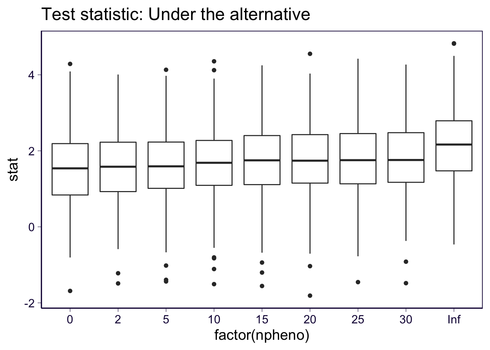
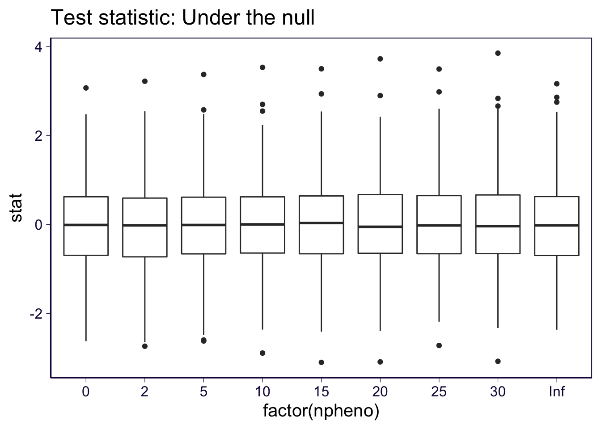
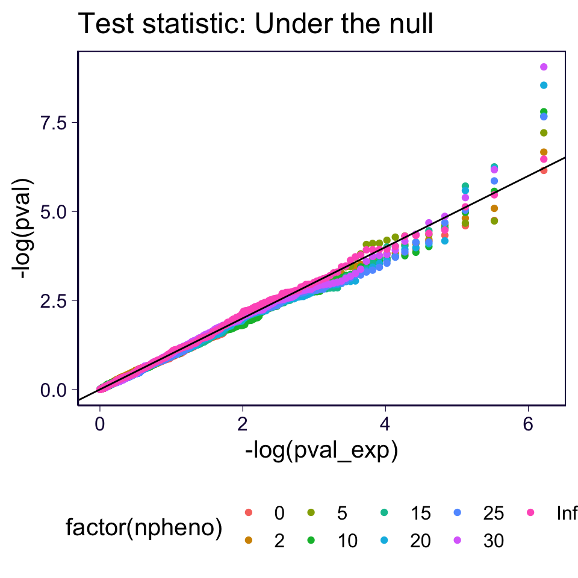
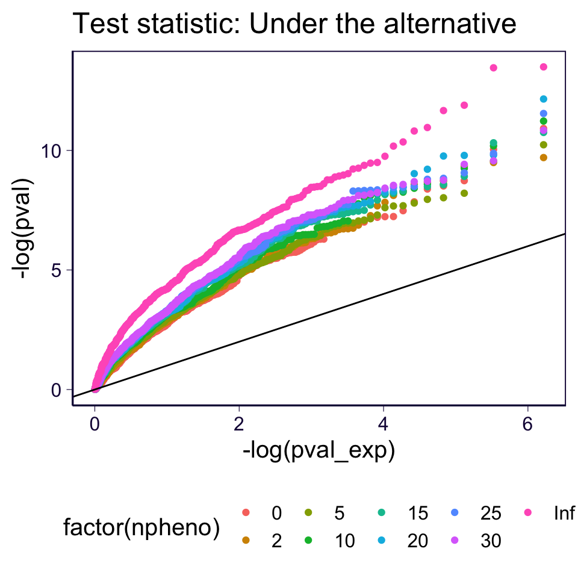
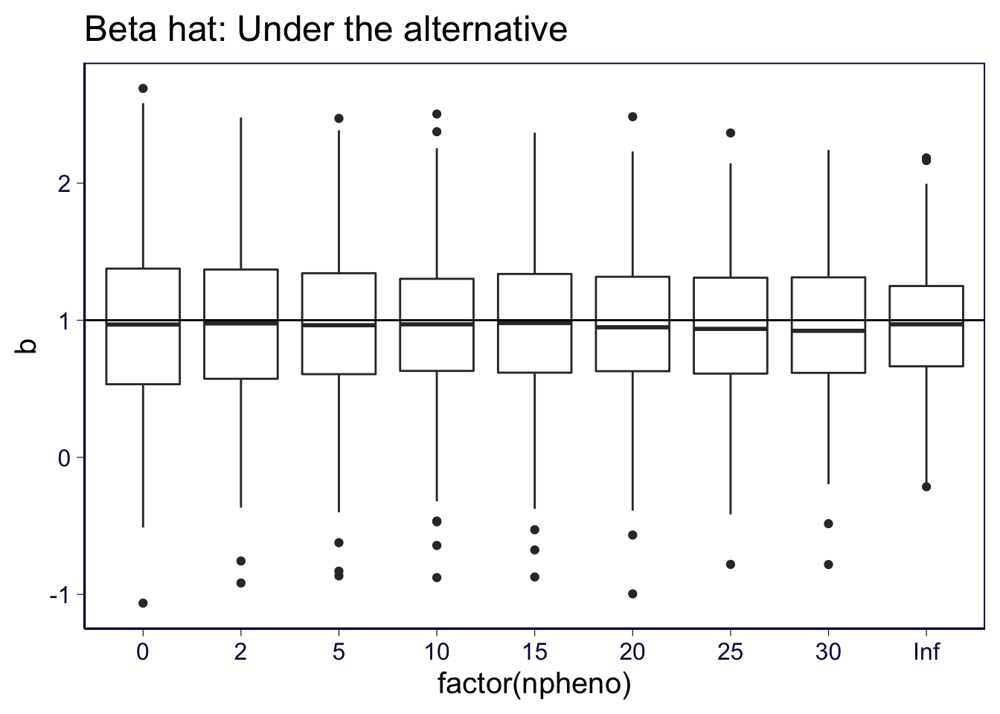
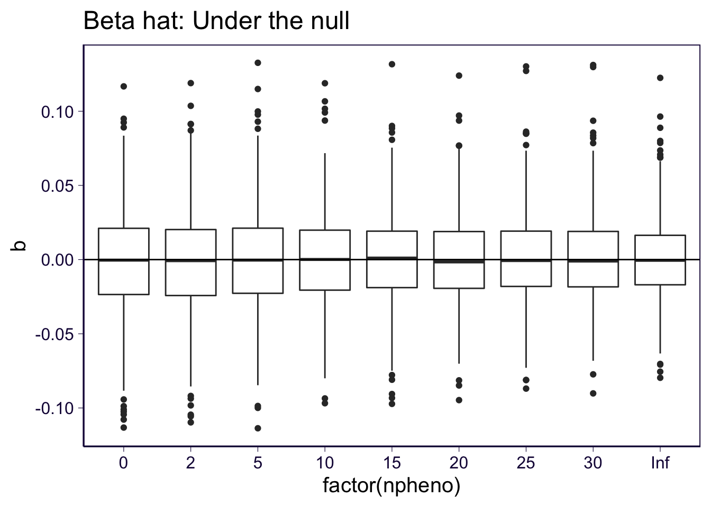

\[ \newcommand{\E}{\text{E}} \]
rm(list = ls())
library(ggplot2)
library(dplyr)##
## Attaching package: 'dplyr'## The following objects are masked from 'package:stats':
##
## filter, lag## The following objects are masked from 'package:base':
##
## intersect, setdiff, setequal, uniontheme_set(theme_bw(base_size=15))
set.seed(2020)
# load some gists
source('https://gist.githubusercontent.com/liangyy/43912b3ecab5d10c89f9d4b2669871c9/raw/3ca651cfa53ffccb8422f432561138a46e93710f/my_ggplot_theme.R')
source('https://gist.githubusercontent.com/liangyy/e580a36154586148cca7fd4cd973f502/raw/bad4364b1700662c7086fcdea191e42f530d0e2e/zval2pval.R')Here we perform simulation and conduct the full analysis including both imputationa and association test. The goal is to provide a more realistic \(\Pr(Z)\) for GWAS analysis (with high variation). At such high variation of \(\Pr(Z)\) (some imputations are good but some are very bad), would there still be power gain?
Some parameter settings:
step1_sample_size = 10000
step1_sample_size_extra = 20000
step1_n_pheno = 30
step1_prior_causal = 0.1
step1_causal_sigma = 1
step1_n_snp = 1000
step1_heritabiltiy = 0.05
step1_maf_low = 0.05
step1_maf_high = 0.45Some paramter settings:
step2_sample_size = 10000
step2_nrepeat = 500
step2_maf_low = 0.05
step2_maf_high = 0.45
step2_heritability = 0.001
step2_beta = 1Data for imputation.
source('../code/rlib_simulation.R')step1_maf = get_maf(step1_n_snp, step1_maf_low, step1_maf_high)
step1_h_father = sim_hap(step1_sample_size, step1_n_snp, step1_maf)
step1_h_mother = sim_hap(step1_sample_size, step1_n_snp, step1_maf)
step1_h_gwas = sim_hap(step1_sample_size_extra, step1_n_snp, step1_maf)
step1_h_child = transmit_haplo(step1_h_father, step1_h_mother)
step1_effect_size = matrix(spike_and_slab(step1_n_snp * step1_n_pheno, 1 - step1_prior_causal, step1_causal_sigma), nrow = step1_n_snp, ncol = step1_n_pheno)
step1_y_father = simulate_pheno(step1_h_father, step1_effect_size, step1_heritabiltiy, step1_maf)
step1_y_mother = simulate_pheno(step1_h_mother, step1_effect_size, step1_heritabiltiy, step1_maf)
step1_y_gwas = simulate_pheno(step1_h_gwas, step1_effect_size, step1_heritabiltiy, step1_maf)Data for association test.
step2_maf = get_maf(step2_nrepeat, step2_maf_low, step2_maf_high)
step2_h_father = sim_hap(step2_sample_size, step2_nrepeat, step2_maf)
step2_h_mother = sim_hap(step2_sample_size, step2_nrepeat, step2_maf)
step2_y_father = simulate_pheno_single_snp(step2_h_father, rep(step2_beta, step2_nrepeat), step2_heritability, step2_maf)
step2_y_mother = simulate_pheno_single_snp(step2_h_mother, rep(step2_beta, step2_nrepeat), step2_heritability, step2_maf)
step2_y_father_null = simulate_pheno_single_snp(step2_h_father, rep(0, step2_nrepeat), step2_heritability, step2_maf, null = TRUE)
step2_y_mother_null = simulate_pheno_single_snp(step2_h_mother, rep(0, step2_nrepeat), step2_heritability, step2_maf, null = TRUE)# build PRS
source('../code/rlib_gwas.R')
build_prs = function(geno, pheno, prs_p_cutoff = 0.01) {
n_snp = ncol(geno)
n_pheno = ncol(pheno)
effect_size_prs = matrix(0, nrow = n_snp, ncol = n_pheno)
prs_p_cutoff = 0.01
prs_z_cutoff = abs(qnorm(prs_p_cutoff / 2))
for(pp in 1 : n_pheno) {
message('Building phenotype ', pp)
gwas = run_gwas(geno, pheno[, pp])
pass_ind = abs(gwas$bhat / gwas$bhat_se) > prs_z_cutoff
effect_size_prs[, pp][pass_ind] = gwas$bhat[pass_ind]
}
return(effect_size_prs)
}
step1_Xgwas = step1_h_gwas[[1]] + step1_h_gwas[[2]]
step1_effect_size_prs = build_prs(step1_Xgwas, step1_y_gwas)## Building phenotype 1## Building phenotype 2## Building phenotype 3## Building phenotype 4## Building phenotype 5## Building phenotype 6## Building phenotype 7## Building phenotype 8## Building phenotype 9## Building phenotype 10## Building phenotype 11## Building phenotype 12## Building phenotype 13## Building phenotype 14## Building phenotype 15## Building phenotype 16## Building phenotype 17## Building phenotype 18## Building phenotype 19## Building phenotype 20## Building phenotype 21## Building phenotype 22## Building phenotype 23## Building phenotype 24## Building phenotype 25## Building phenotype 26## Building phenotype 27## Building phenotype 28## Building phenotype 29## Building phenotype 30source('../code/rlib_em.R')
step1_g1 = step1_h_child[[1]] %*% step1_effect_size_prs
step1_g2 = step1_h_child[[2]] %*% step1_effect_size_prs
collector = list()
for(p in c(2, 5, 10, 15, 20, 25, 30)) {
o = em_algorithm(step1_y_father[, 1:p], step1_y_mother[, 1:p], step1_g1[, 1:p], step1_g2[, 1:p])
collector[[length(collector) + 1]] = data.frame(z = o$z_prob_n, num_pheno = p, idx = 1 : length(o$z_prob_n))
}
df_estimated = do.call(rbind, collector)source('../code/rlib_gwas.R')
dm0 = list(
X = (step2_h_father[[1]] + step2_h_mother[[1]]) / 2,
y = step2_y_father,
ynull = step2_y_father_null
)
dm1 = function(z) {
list(
X = step2_h_father[[1]] * z + step2_h_mother[[1]] * (1 - z),
y = step2_y_father,
ynull = step2_y_father_null
)
}
dm2 = list(
X = step2_h_father[[1]],
y = step2_y_father,
ynull = step2_y_father_null
)Actual GWAS run.
re = list()
ys = c('y', 'ynull')
types = c('beta = 1', 'beta = 0')
# setting 1
for(i in 1 : length(ys)) {
o = run_gwas_pairwise(dm0$X, dm0[[ys[i]]])
re[[length(re) + 1]] = data.frame(b = o$bhat, b_se = o$bhat_se, npheno = 0, type = types[i])
}
# setting 2
for(npheno in unique(df_estimated$num_pheno)) {
message('Working on npheno = ', npheno)
zvec = df_estimated$z[df_estimated$num_pheno == npheno]
zmat = matrix(rep(zvec, step2_nrepeat), nrow = step2_sample_size, ncol = step2_nrepeat)
# setting 2
dm1_ = dm1(zmat)
for(i in 1 : length(ys)) {
o = run_gwas_pairwise(dm1_$X, dm1_[[ys[i]]])
re[[length(re) + 1]] = data.frame(b = o$bhat, b_se = o$bhat_se, npheno = npheno, type = types[i])
}
}## Working on npheno = 2## Working on npheno = 5## Working on npheno = 10## Working on npheno = 15## Working on npheno = 20## Working on npheno = 25## Working on npheno = 30# setting 3
for(i in 1 : length(ys)) {
o = run_gwas_pairwise(dm2$X, dm2[[ys[i]]])
re[[length(re) + 1]] = data.frame(b = o$bhat, b_se = o$bhat_se, npheno = Inf, type = types[i])
}
df_re = do.call(rbind, re) %>% mutate(stat = b / b_se)Test statistic.
df_re %>% filter(type == 'beta = 1') %>%
ggplot() + geom_boxplot(aes(x = factor(npheno), y = stat)) +
ggtitle('Test statistic: Under the alternative') + th2 +
theme(legend.position = 'bottom')
df_re %>% filter(type == 'beta = 0') %>%
ggplot() + geom_boxplot(aes(x = factor(npheno), y = stat)) +
ggtitle('Test statistic: Under the null') + th2 +
theme(legend.position = 'bottom')
QQ-plot.
df_re = df_re %>% mutate(pval = zval2pval(stat)) # , df = sample_size - 2
df_re = df_re %>% group_by(npheno, type) %>% mutate(pval_exp = rank(pval) / (n() + 1)) %>% ungroup()
df_re %>% filter(type == 'beta = 0') %>%
ggplot() + geom_point(aes(x = -log(pval_exp), y = -log(pval), color = factor(npheno))) +
ggtitle('Test statistic: Under the null') + th2 +
geom_abline(slope = 1, intercept = 0) +
theme(legend.position = 'bottom')
df_re = df_re %>% mutate(pval = zval2pval(stat)) # , df = sample_size - 2
df_re = df_re %>% group_by(npheno, type) %>% mutate(pval_exp = rank(pval) / (n() + 1)) %>% ungroup()
df_re %>% filter(type == 'beta = 1') %>%
ggplot() + geom_point(aes(x = -log(pval_exp), y = -log(pval), color = factor(npheno))) +
ggtitle('Test statistic: Under the alternative') + th2 +
geom_abline(slope = 1, intercept = 0) +
theme(legend.position = 'bottom')
Beta hat.
df_re %>% filter(type == 'beta = 1') %>%
ggplot() + geom_boxplot(aes(x = factor(npheno), y = b)) +
ggtitle('Beta hat: Under the alternative') + th2 +
theme(legend.position = 'bottom') +
geom_hline(yintercept = 1)
df_re %>% filter(type == 'beta = 0') %>%
ggplot() + geom_boxplot(aes(x = factor(npheno), y = b)) +
ggtitle('Beta hat: Under the null') + th2 +
theme(legend.position = 'bottom') +
geom_hline(yintercept = 0)